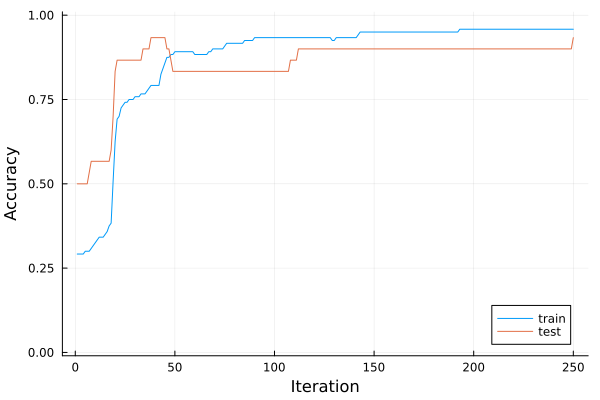

Introduction to Flux
Flux is a library for using neural networks. This part will present the basics of Flux on the Iris dataset from the previous lecture. We include the auxiliary functions from the previous lesson into the utilities.jl file, which we include by
include("utilities.jl")We set the seed and load the data in the same way as during the last lecture.
using RDatasets
using Random
Random.seed!(666)
iris = dataset("datasets", "iris")
X = Matrix{Float32}(iris[:, 1:4])
y = iris.Species
X_train, y_train, X_test, y_test, classes = prepare_data(X', y; dims=2)Creating the network
We recall that machine learning minimizes the discrepancy between the predictions $\operatorname{predict}(w; x_i)$ and labels $y_i$. Mathematically, this amounts to minimizing the following objective function:
\[L(w) = \frac1n\sum_{i=1}^n \operatorname{loss}(y_i, \operatorname{predict}(w; x_i)).\]
To build the objective $L$, we first specify the prediction function $\operatorname{predict}$, which we denote by model m. We start by creating the same network by the function Chain. Its inputs are the individual layers. Dense layers are created by Dense with the correct number of input and output neurons. We also need to specify the activation functions.
using Flux
n_hidden = 5
m = Chain(
Dense(size(X_train,1) => n_hidden, relu),
Dense(n_hidden => size(y_train,1), identity),
softmax,
)Since identity is the default argument, it is possible to remove it in the second layer. However, we recommend keeping it for clarity.
We can evaluate the whole dataset.
m(X_train)3×120 Matrix{Float32}:
0.374425 0.394161 0.31563 0.275201 … 0.414601 0.361287 0.241313
0.315142 0.133596 0.197784 0.544938 0.227725 0.313487 0.620158
0.310433 0.472243 0.486586 0.179861 0.357673 0.325226 0.13853Because there are $3$ classes and $120$ samples in the training set, it returns an array of size $3\times 120$. Each column corresponds to one sample and forms a vector of probabilities due to the last layer of softmax.
We access the neural network parameters by using params(m). We can select the second layer of m by m[2]. Since the second layer has $5$ inputs and $3$ output neurons, its parameters are a matrix of size $3\times 5$ and a vector of length $3$. The parameters params(m[2]) are a tuple of the matrix and the vector. This also implies that the parameters are initialized randomly, and we do not need to take care of it. We can also easily modify any parameters.
using Flux: params
params(m[2])[2] .= [-1;0;1]Training the network
To train the network, we need to define the objective function $L$. Since we already defined $\operatorname{predict}$, it suffices to define the loss function $\operatorname{loss}$. Since we work with a multi-class problem, the loss function is usually the cross-entropy.
using Flux: crossentropy
L(ŷ, y) = crossentropy(ŷ, y)The loss function should be defined between predicted $\hat{y}$ and true label $y$. Therefore, we can evaluate the objective function by
L(m(X_train), y_train)1.5389596f0where ŷ = m(x).
This computes the objective function on the whole training set. Since Flux is (unlike our implementation from the last lecture) smart, there is no need to take care of individual samples.
While the standard definition of cross-entropy is $\operatorname{loss}(y,\hat y)$, Flux uses $\operatorname{loss}(\hat y,y)$.
Since we have the model and the loss function, the only remaining thing is the gradient. Flux again provides a smart way to compute it.
grads = Flux.gradient(m -> L(m(X_train), y_train), m)The function gradient takes as inputs a function to differentiate, and arguments that specify the parameters we want to differentiate with respect to. Since the argument is the model m itself, the gradient is taken with respect to the parameters of m. The L function needs to be evaluated at the correct points m(X_train) (predictions) and y_train (true labels).
The grads structure is a tuple holding a named tuple with the :layers key. Each layer then holds the parameters of the model, in this case, the weights $W$, bias $b$, and optionally parameters of the activation function $\sigma$.
julia> grads[1][:layers][2]
(weight = Float32[0.30140522 0.007785671 … -0.070617765 0.014230583; 0.06814249 -0.07018863 … 0.17996183 -0.20995824; -0.36954764 0.062402964 … -0.10934405 0.19572766], bias = Float32[0.0154182855, 0.022615476, -0.03803377], σ = nothing)Now, we train the classifiers for 250 iterations. In each iteration, we compute the gradient with respect to all network parameters and perform the gradient descent with stepsize $0.1$. Since Flux@0.14, there's been a change from implicit definition to explicit definition of optimisers. Since now, we need to use Flux.setup(optimiser, model) to create an optimiser that would optimise over the model's parameters.
opt = Descent(0.1)
opt_state = Flux.setup(opt, m)
max_iter = 250
acc_train = zeros(max_iter)
acc_test = zeros(max_iter)
for i in 1:max_iter
gs = Flux.gradient(m -> L(m(X_train), y_train), m)
Flux.update!(opt_state, m, gs[1])
acc_train[i] = accuracy(X_train, y_train)
acc_test[i] = accuracy(X_test, y_test)
endBoth the accuracy on the training and testing set keeps increasing as the training progresses. This is a good check that we are not over-fitting.
using Plots
plot(acc_train, xlabel="Iteration", ylabel="Accuracy", label="train", ylim=(-0.01,1.01))
plot!(acc_test, xlabel="Iteration", label="test", ylim=(-0.01,1.01))"/home/runner/work/Julia-for-Optimization-and-Learning/Julia-for-Optimization-and-Learning/docs/build/lecture_11/Iris_train_test_acc.svg"